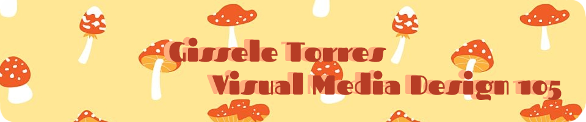
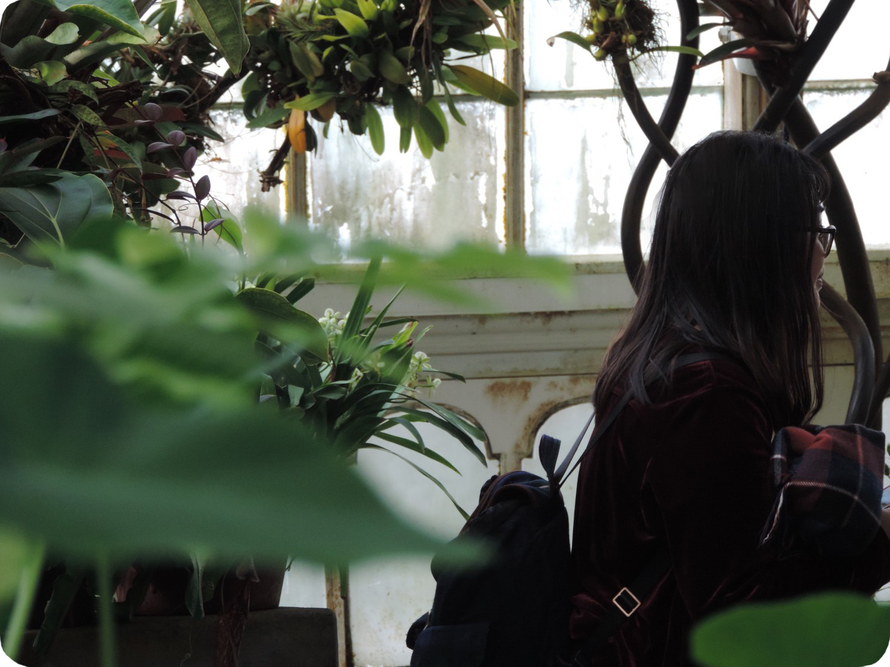

 Home |
Raster |
Vector |
Time Based Media |
Print Layout |
Contact
Home |
Raster |
Vector |
Time Based Media |
Print Layout |
Contact
Introduction

Welcome to my final Visual Media Design project for the fall 2018 semester.
My name is Gissele Torres and I'm majoring in graphic design.
This website displays all previous projects I've completed for the class.
I took this class to fulfill a foundational area in my academic career and it has been a
very fun, explorative experience.
‹
›